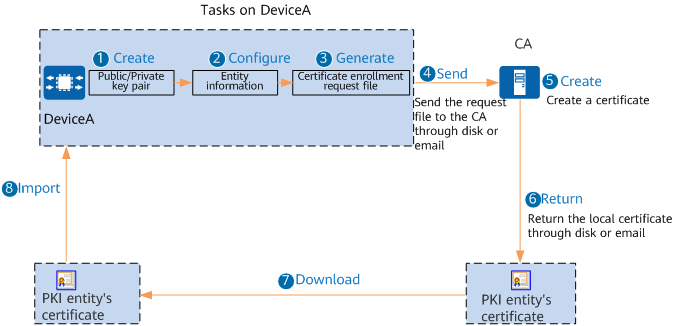

Understanding Offline Certificate Application
Certificate application, also known as certificate enrollment, is a process in which a PKI entity introduces itself to a CA, which then issues it a certificate. To obtain a local certificate offline, you need to configure PKI entity information, configure an RSA key pair, apply for the local certificate, and install the local certificate. Figure 1 shows the process of applying for a certificate in offline mode.
Figure 1 Process of applying for a certificate in offline mode
- Create a public/private key pair on DeviceA. The public key information is required during certificate application.
- Configure entity information. When applying for a certificate, DeviceA must provide the CA with information that can prove its identity. The entity information represents identity information, including the common name, fully qualified domain name (FQDN), IP address, and email address. The common name is mandatory, while others are optional. After entity information is configured, reference the entity information in the PKI realm.
- Generate a certificate enrollment request file. The generated certificate enrollment request file is named PKI realm name.req and saved in the storage device of DeviceA.
- After the certificate enrollment request file is generated, it can be sent to the CA in out-of-band mode (for example, by disk or email).
- After approving the request, the CA creates a certificate based on the certificate enrollment request file.
- After the certificate is generated, DeviceA's local certificate DeviceA.cer is obtained in out-of-band mode (for example, by disk or email).
- Download DeviceA.cer to the flash:/pki/public directory on DeviceA.
- Import DeviceA.cer to the memory of Device A.